UDN
Search public documentation:
ExampleMapsEPIC
Interested in the Unreal Engine?
Visit the Unreal Technology site.
Looking for jobs and company info?
Check out the Epic games site.
Questions about support via UDN?
Contact the UDN Staff
EPIC Demonstration Maps
Document Summary: A smattering of maps that cover a range of topics. Matinee, Material, Particles and Sound are all covered. Since these are here more as examples of what is possible rather than tutorials/explanations, these maps are appropriate for novices. Requires some knowledge of where to put Unreal-specific files. Document Changelog: Last updated by Tom Lin (DemiurgeStudios?), for document summary. Original author was Jason Lentz (DemiurgeStudios?).Introduction
This document contains the old EPIC Demo Maps updated to the 2110 build. As of yet they are not entirely integrated and there are still a few more maps still to come, but the ones included in the zip file at the bottom of this doc should work fine to demonstrate their intended focus. Be sure to put all the necessary .ukx, .usk, and .uax packages in their appropriate folders as well.CIN Dolly Example Map
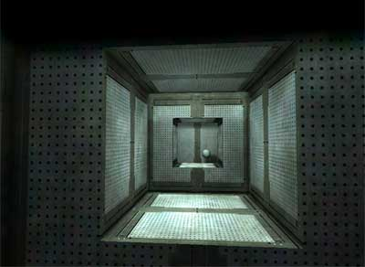
This map demonstrates some of the things you can do with Matinee. Upon playing the map you will see a brief cinematic where you slowly fly by a sphere, fade to black, start again in a new position and then the camera will track the sphere as it flies by.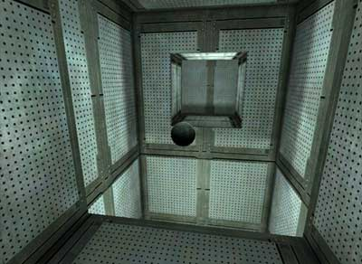
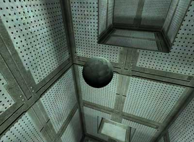
For more information on how to use Matinee, see the following docs:Materials Example Map
 In this map you can see several examples of how materials can be used in various ways. This map will eventually have Karma Physics integrated back into it, but for now you can use it to see some effects that can be achieved with different materials
In this map you can see several examples of how materials can be used in various ways. This map will eventually have Karma Physics integrated back into it, but for now you can use it to see some effects that can be achieved with different materials
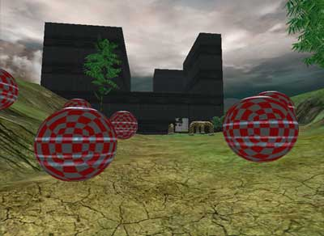
For more information on how to use Materials, see the MaterialTutorial.Particles Example Map
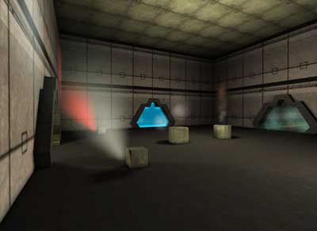
In the Particles map you will see a myriad of effects ranging from sweeping laser scans, vented steam, pouring molten fiery stuff, bouncing blue balls electric fuzz, and just general explosions.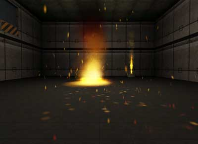
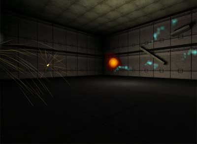
Also you can see various outdoor effects such as lighting (both the ground striking variety and the cloud-lighting-up variety), tornados with debris, and rising smoke clouds.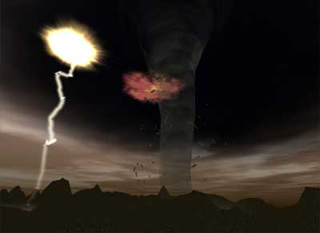
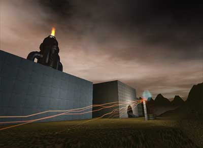
For more information on how to create such effects, see the following docs:Sound Example Map
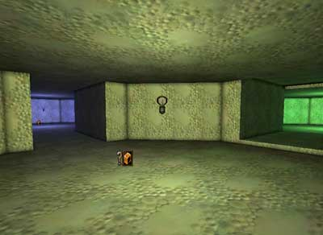
This map demonstrates how sounds can be used in a variety of ways including with zones, particle systems, and AmbientSoundActors aplenty.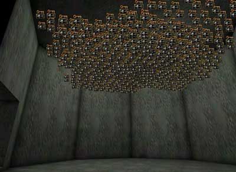
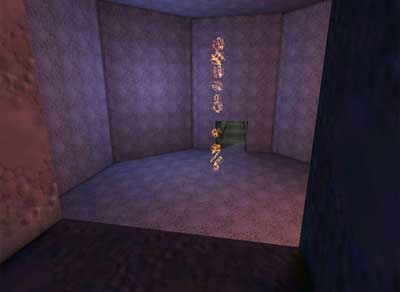
For more information on how to use sounds, see the ExampleMapsSounds document.Downloads
Click the links to download compressed archives of the example maps discussed in this document:- EPIC_DemoMapFiles.zip - example maps.
- EPIC_CINDollyExampleMap_RT.zip - runtime version of the CIN_DollyExampleMap.